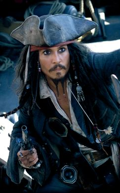
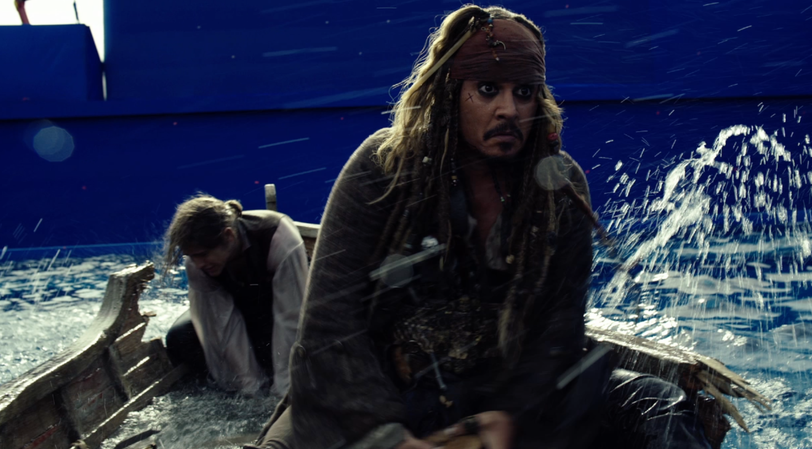

Plus tôt dans les années 1990, les scénaristes Ted Elliott et Terry Rossio conçoivent d'écrire un film fondé sur l'attraction de Pirates of the Caribbean. Jay Wolpert (en) écrit un script pour Disney, fondé sur cette attraction, que le producteur refuse, pensant que c'était un « film fortement fondé sur les pirates »1. Stuart Beattie est appelé à réécrire le script, en mars 2002, à l'aide de son savoir sur la piraterie et, plus tard durant le même mois, Elliott et Rossio sont appelés à également rédiger le script1. Elliott et Rossio sont inspirés par le thème de l'attraction Pirates of the Caribbean, et décident de donner à leur film un genre fantastique2. Alors que le budget commence à être dépensé, Michael Eisner et Robert Iger menacent d'annuler le film, bien que Bruckheimer ait changé d'avis lorsqu'il a exposé l'art conceptuel et les animatics.
